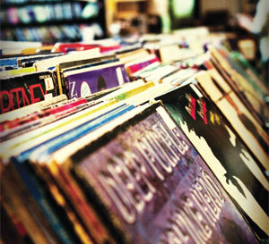

About Us ...
| G&S Records was founded by Gjorgi Stojanov and Sam Holloway, both avid music fans and record enthusiasts. Their passion for artist development made G&S Records the home of choice for legendary artists including Nirvana, Led Zeppelin, Jennifer Lopez, Black Eyed Peas, The Rolling Stones, Cher, Genesis, Cream and many more. With many years in the music industry, our passion for artistry in music continues today as a new generation of incredible artists further the G&S Records legacy. |
 |
Team6:
George Stojanov
Sam Holloway
Citations:
AtlanticRecords
Graphic Spring